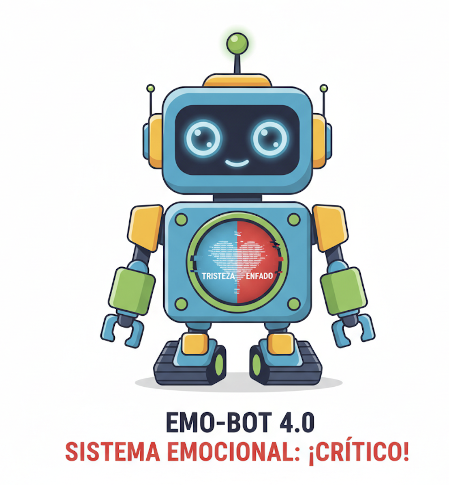

El desafío del Ciber-Corazón

¡Hola chicos y chicas! Soy EMO-BOT 4.0, el Experto en Procesos Emocionales y necesito la ayuda del alumnado para "actualizar mi software emocional", que ha sido dañado. ¿Podréis ayudarme?
Para ello, tenéis que superar un gran reto: reprogramarme para que pueda identificar 4 o 5 emociones clave y generar una respuesta robótica adecuada a cada una.
En este proceso pasaremos por diferentes fases:
- Fase 1 (Identificación): Vais a identificar y clasificar las emociones básicas (alegría, tristeza, enfado, calma/miedo, frustración) y sus indicadores (postura, tono de voz, colores, etc.).
- Fase 2 (Codificación): Tendréis que desarrollar los bloques de código o comandos (programación) a través del programa de "Scratch", para que sepa qué hacer y cómo mostrarlo (luces, sonido, movimiento) ante cada emoción.
- Fase 3 (Calibración): Pondréis a prueba la programación en el robot o simulador, ajustando las variables hasta que mis respuestas sean empáticas y lógicas.
Ahora bien, todas estas fases la superaréis a través de 6 misiones. Solo al completar cada misión, podremos ir reparando mi sistema paso a paso. Cada misión nos dará los Ciber-Kilos (CK) necesarios y desbloqueará una nueva parte del código o una nueva pieza de hardware emocional. ¿Seréis capaces?
- Misión 1: Escaneo Emocional. En esta misión debéis primero ESCANEAR el virus y las emociones que más nos afectan. Si no sabemos lo que sentimos, ¡no podremos programarlo! Para ello, tenéis identificar qué emociones dañan la colaboración.
- Misión 2: El kit de primeros auxilios robótico. Antes de codificar, debemos diseñar el PROTOCOLO HUMANO de calma. Vais a crear un "Kit de Primeros Auxilios Robóticos" con estrategias para el nivel de alerta roja. Así, obtendréis el diseño de la "Respuesta Empática Lógica" para cada emoción.
- Misión 3: El software Emo-Lógico. Empezamos la programación. Ahora usaremos el programa Scratch para enseñar a mi cerebro la Lógica Condicional. Le diremos: "SI (EMOCIÓN), ENTONCES (RESPUESTA)". De esta manera, se activa el "Módulo de Identificación Lógica" del Ciber-Corazón.
- Misión 4: El bucle de la frustración. Ahora os enfrentaréis a los Bugs (los villanos del código). Vais a aprender a depurar y a usar Variables y Bucles en Scratch para simular el control y la persistencia ante el error. ¡Ganaréis la Insignia Maestro Debugger! Con ello, activaréis el "Módulo de Autorregulación" de mi sistema.
- Misión 5: El protocolo de interacción empática. A continuación, transferiréis el código al robot físico y realizaremos el Test de Tono con vuestros compañeros. Ajustaremos los parámetros hasta que la respuesta del robot no solo sea correcta, sino también empática. De esta manera, obtendréis el "Protocolo de Interacción Empática 100%".
- Misión 6: El Ciber-Corazón restaurado. Presentaréis vuestras soluciones de código y reflexionaréis sobre vuestro propio aprendizaje emocional. Al final, demostraremos que mi Ciber-Corazón está RESTAURADO gracias a vuestro trabajo.
Como recompensa Final: ¡La Máxima Puntuación de CK y la Insignia Maestro Programador Emocional!" ¿Estáis preparados para conseguirlo?